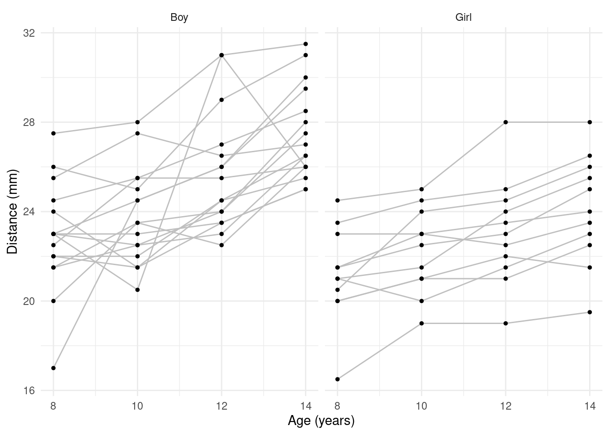
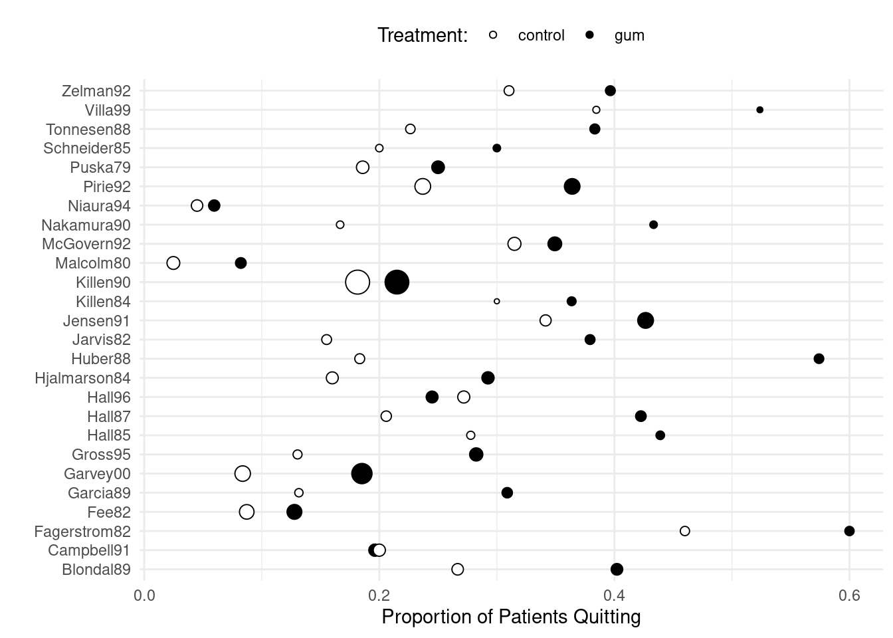
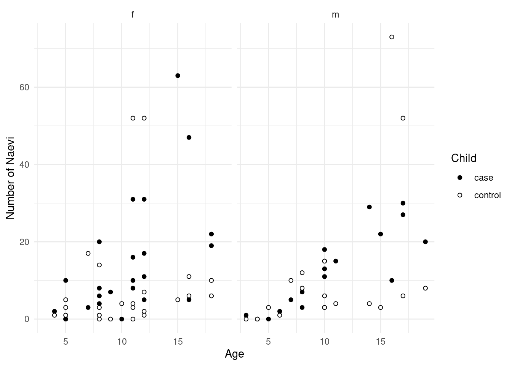
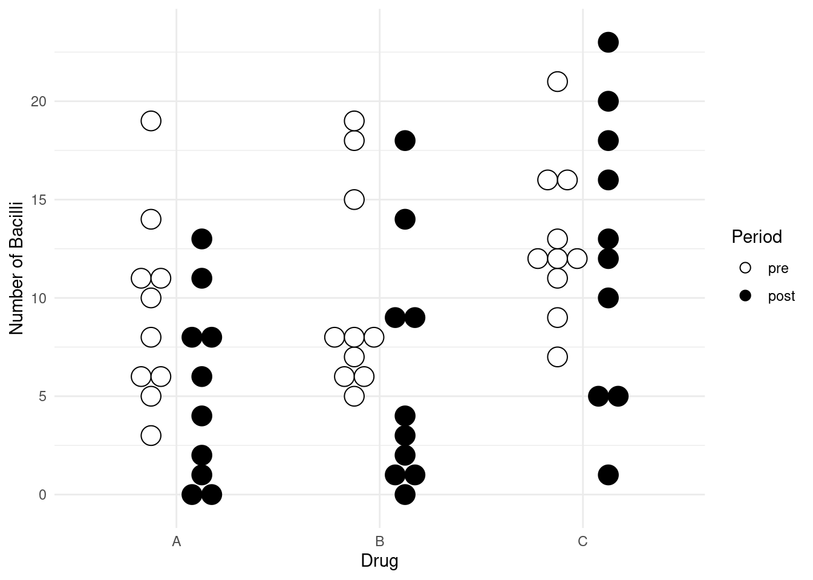

You can also download a PDF copy of this lecture.
The fixed effects approach is to specify the many-leveled factor as we might normally do with a factor with fewer levels. The term “fixed effects” is used to distinguish it from the “random effects” approach which we will discuss later. The question then is if and how having such a factor compromises inferences.
Example: Consider again the baserun
data.
library(dplyr)
library(tidyr)
baselong <- trtools::baserun %>% mutate(player = factor(letters[1:n()])) %>%
pivot_longer(cols = c(round, narrow, wide), names_to = "route", values_to = "time")
head(baselong)# A tibble: 6 × 3
player route time
<fct> <chr> <dbl>
1 a round 5.4
2 a narrow 5.5
3 a wide 5.55
4 b round 5.85
5 b narrow 5.7
6 b wide 5.75Consider a fixed effects model with an effect for player (but no interaction with route).
m.fix <- lm(time ~ route + player, data = baselong)
summary(m.fix)$coefficients Estimate Std. Error t value Pr(>|t|)
(Intercept) 5.505e+00 0.05205 1.058e+02 1.320e-52
routeround 9.091e-03 0.02603 3.493e-01 7.286e-01
routewide -7.500e-02 0.02603 -2.882e+00 6.208e-03
playerb 2.833e-01 0.07048 4.020e+00 2.366e-04
playerc -5.000e-02 0.07048 -7.094e-01 4.820e-01
playerd 3.192e-15 0.07048 4.529e-14 1.000e+00
playere 3.333e-01 0.07048 4.729e+00 2.550e-05
playerf 5.000e-02 0.07048 7.094e-01 4.820e-01
playerg -1.000e-01 0.07048 -1.419e+00 1.633e-01
playerh -5.000e-02 0.07048 -7.094e-01 4.820e-01
playeri -3.500e-01 0.07048 -4.966e+00 1.189e-05
playerj 3.000e-01 0.07048 4.256e+00 1.140e-04
playerk -3.000e-01 0.07048 -4.256e+00 1.140e-04
playerl 6.667e-02 0.07048 9.459e-01 3.496e-01
playerm -1.667e-02 0.07048 -2.365e-01 8.142e-01
playern -4.833e-01 0.07048 -6.858e+00 2.323e-08
playero -1.667e-02 0.07048 -2.365e-01 8.142e-01
playerp 1.667e-02 0.07048 2.365e-01 8.142e-01
playerq 2.866e-15 0.07048 4.067e-14 1.000e+00
playerr 1.667e-02 0.07048 2.365e-01 8.142e-01
players -8.333e-02 0.07048 -1.182e+00 2.437e-01
playert 6.667e-02 0.07048 9.459e-01 3.496e-01
playeru 1.500e-01 0.07048 2.128e+00 3.923e-02
playerv 8.000e-01 0.07048 1.135e+01 2.238e-14For comparison, we will also consider the marginal model using GEE, which should produce fairly accurate inferences.
library(geepack)
m.gee <- geeglm(time ~ route, data = baselong,
id = player, corstr = "exchangeable")
trtools::lincon(m.gee) # easy way to get something like summary(m.gee)$coefficients estimate se lower upper tvalue df pvalue
(Intercept) 5.534091 0.05411 5.42597 5.64221 102.2809 63 9.591e-72
routeround 0.009091 0.02564 -0.04215 0.06033 0.3546 63 7.241e-01
routewide -0.075000 0.01839 -0.11176 -0.03824 -4.0775 63 1.301e-04Here are the inferences for the expected time for each route, and the differences in the expected time between routes.
library(emmeans)
# Note: The player we choose does not matter.
pairs(emmeans(m.fix, ~route, at = list(player = "a")), infer = TRUE, adjust = "none") contrast estimate SE df lower.CL upper.CL t.ratio p.value
narrow - round -0.00909 0.026 42 -0.0616 0.0434 -0.349 0.7286
narrow - wide 0.07500 0.026 42 0.0225 0.1275 2.882 0.0062
round - wide 0.08409 0.026 42 0.0316 0.1366 3.231 0.0024
Confidence level used: 0.95 pairs(emmeans(m.gee, ~route), infer = TRUE, adjust = "none") contrast estimate SE df asymp.LCL asymp.UCL z.ratio p.value
narrow - round -0.00909 0.0256 Inf -0.0593 0.0412 -0.355 0.7229
narrow - wide 0.07500 0.0184 Inf 0.0389 0.1110 4.077 <.0001
round - wide 0.08409 0.0307 Inf 0.0239 0.1443 2.737 0.0062
Confidence level used: 0.95 In linear models a fixed effects approach where the factor does not interact with other explanatory variables can produce valid inferences. But some inferences for explanatory variables that are confounded with the factor are not possible.
Example: Consider the following data on orthodontic measurements on children over time.
library(bayeslongitudinal)
head(Dental) gender id gencode distance age
1 Girl 1 1 21.0 8
2 Girl 1 1 20.0 10
3 Girl 1 1 21.5 12
4 Girl 1 1 23.0 14
5 Girl 2 1 21.0 8
6 Girl 2 1 21.5 10p <- ggplot(Dental, aes(x = age, y = distance)) +
geom_line(aes(group = id), color = grey(0.75)) +
geom_point(size = 1) + facet_wrap(~ gender) +
labs(x = "Age (years)", y = "Distance (mm)") + theme_minimal()
plot(p) Age could be treated as a quantitative or categorical variable here. But the problem with the fixed effects approach is inferences for differences in expected distance between male and female children.
m.fix <- lm(distance ~ id + age + gender, data = Dental)
summary(m.fix)$coefficients Estimate Std. Error t value Pr(>|t|)
(Intercept) 18.71963 1.52595 12.2675 6.228e-22
id -0.05194 0.05356 -0.9698 3.344e-01
age 0.66019 0.09779 6.7513 8.587e-10
genderGirl -3.02227 0.84903 -3.5597 5.613e-04Notice that there is no indicator variable of gender! The
lm function recognized that it is confounded with subject
and removed it. We can see this if we construct a table of the number of
observations by subject and sex.
with(Dental, table(id, gender)) gender
id Boy Girl
1 0 4
2 0 4
3 0 4
4 0 4
5 0 4
6 0 4
7 0 4
8 0 4
9 0 4
10 0 4
11 0 4
12 4 0
13 4 0
14 4 0
15 4 0
16 4 0
17 4 0
18 4 0
19 4 0
20 4 0
21 4 0
22 4 0
23 4 0
24 4 0
25 4 0
26 4 0
27 4 0These factors are nested (i.e., the variable id
is nested in the variable gender).
By changing the order of the explanatory variables we can get sex in the model but then we lose a subject indicator variable.
m.fix <- lm(distance ~ age * gender + id, data = Dental)
summary(m.fix)$coefficients Estimate Std. Error t value Pr(>|t|)
(Intercept) 17.35354 1.75589 9.8830 1.347e-16
age 0.78437 0.12620 6.2155 1.102e-08
genderGirl 0.33085 2.33265 0.1418 8.875e-01
id -0.05194 0.05321 -0.9762 3.312e-01
age:genderGirl -0.30483 0.19771 -1.5418 1.262e-01If we wanted to compare the boys and girls, we could in principle estimate the average expected response for each sex, and the difference in these average expected responses (at a given age).
emmeans(m.fix, ~ gender, at = list(age = 14)) gender emmean SE df lower.CL upper.CL
Boy 27.6 0.555 103 26.5 28.7
Girl 23.7 0.711 103 22.3 25.1
Confidence level used: 0.95 pairs(emmeans(m.fix, ~ gender, at = list(age = 14))) contrast estimate SE df t.ratio p.value
Boy - Girl 3.94 1.03 103 3.818 0.0002But there is maybe a limitation of such inferences — they are for these particular children (i.e., these 16 boys and 11 girls). We will see if/how we can generalize these inferences to other boys and girls of a given sex or age.
We also have a problem if we specify an interaction involving subject.
m.fix <- lm(distance ~ id*age + gender*age, data = Dental)
summary(m.fix)$coefficients Estimate Std. Error t value Pr(>|t|)
(Intercept) 19.236375 5.4206 3.5488 0.0005868
id -0.148500 0.2682 -0.5536 0.5810510
age 0.613208 0.4829 1.2698 0.2070315
genderGirl -0.972648 4.2520 -0.2287 0.8195226
id:age 0.008778 0.0239 0.3673 0.7141351
age:genderGirl -0.186330 0.3788 -0.4919 0.6238531Note that there are no terms for gender
Fixed effects can produce valid inferences for nonlinear models (including generalized linear models), but not necessarily. It depends, in part, on the number of parameters relative to the number of observations.
Example: Recall the meta-analysis of 26 studies of the effect of nicotine gum on smoking cessation.
library(dplyr)
library(tidyr)
quitsmoke <- HSAUR3::smoking
quitsmoke$study <- rownames(quitsmoke)
quitsmoke.quits <- quitsmoke %>% dplyr::select(study, qt, qc) %>%
rename(gum = qt, control = qc) %>%
pivot_longer(cols = c(gum,control), names_to = "treatment", values_to = "quit")
quitsmoke.total <- quitsmoke %>% dplyr::select(study, tt, tc) %>%
rename(gum = tt, control = tc) %>%
pivot_longer(cols = c(gum,control), names_to = "treatment", values_to = "total")
quitsmoke <- full_join(quitsmoke.quits, quitsmoke.total) %>% mutate(study = factor(study)) %>% arrange(study)
head(quitsmoke)# A tibble: 6 × 4
study treatment quit total
<fct> <chr> <int> <int>
1 Blondal89 gum 37 92
2 Blondal89 control 24 90
3 Campbell91 gum 21 107
4 Campbell91 control 21 105
5 Fagerstrom82 gum 30 50
6 Fagerstrom82 control 23 50p <- ggplot(quitsmoke, aes(x = study, y = quit/total,
size = total, fill = treatment)) +
geom_point(pch = 21) + coord_flip() + guides(size = "none") +
scale_fill_manual(values = c("White","Black")) + theme_minimal() +
labs(x = "", y = "Proportion of Patients Quitting", fill = "Treatment:") +
theme(legend.position = "top")
plot(p) Here is a fixed-effects logistic regression model.
m <- glm(cbind(quit, total-quit) ~ treatment + study,
family = binomial, data = quitsmoke)
summary(m)$coefficients Estimate Std. Error z value Pr(>|z|)
(Intercept) -0.95611 0.16223 -5.8935 3.782e-09
treatmentgum 0.51478 0.06571 7.8337 4.738e-15
studyCampbell91 -0.72182 0.23458 -3.0771 2.090e-03
studyFagerstrom82 0.82087 0.25660 3.1990 1.379e-03
studyFee82 -1.44471 0.23392 -6.1760 6.575e-10
studyGarcia89 -0.51371 0.27679 -1.8560 6.346e-02
studyGarvey00 -1.13119 0.19513 -5.7970 6.750e-09
studyGross95 -0.57476 0.23716 -2.4235 1.537e-02
studyHall85 0.11322 0.28635 0.3954 6.926e-01
studyHall87 -0.08874 0.24238 -0.3661 7.143e-01
studyHall96 -0.36356 0.22648 -1.6052 1.084e-01
studyHjalmarson84 -0.54554 0.23002 -2.3717 1.771e-02
studyHuber88 0.16466 0.25162 0.6544 5.128e-01
studyJarvis82 -0.32539 0.26384 -1.2333 2.175e-01
studyJensen91 0.18524 0.19887 0.9314 3.516e-01
studyKillen84 -0.05394 0.30863 -0.1748 8.613e-01
studyKillen90 -0.71634 0.17393 -4.1186 3.812e-05
studyMalcolm80 -2.28969 0.37670 -6.0784 1.214e-09
studyMcGovern92 -0.02349 0.20432 -0.1150 9.085e-01
studyNakamura90 -0.16186 0.32479 -0.4984 6.182e-01
studyNiaura94 -2.22602 0.37765 -5.8945 3.759e-09
studyPirie92 -0.15991 0.19132 -0.8358 4.033e-01
studyPuska79 -0.59867 0.22560 -2.6536 7.963e-03
studySchneider85 -0.41647 0.33913 -1.2281 2.194e-01
studyTonnesen88 -0.13127 0.25883 -0.5072 6.120e-01
studyVilla99 0.50932 0.33548 1.5182 1.290e-01
studyZelman92 0.08506 0.25163 0.3380 7.353e-01We can estimate the odds ratio for the effect of treatment as follows.
rbind(pairs(emmeans(m, ~ treatment | study, type = "response"),
reverse = TRUE), adjust = "none") study contrast odds.ratio SE df null z.ratio p.value
Blondal89 gum / control 1.67 0.11 Inf 1 7.834 <.0001
Campbell91 gum / control 1.67 0.11 Inf 1 7.834 <.0001
Fagerstrom82 gum / control 1.67 0.11 Inf 1 7.834 <.0001
Fee82 gum / control 1.67 0.11 Inf 1 7.834 <.0001
Garcia89 gum / control 1.67 0.11 Inf 1 7.834 <.0001
Garvey00 gum / control 1.67 0.11 Inf 1 7.834 <.0001
Gross95 gum / control 1.67 0.11 Inf 1 7.834 <.0001
Hall85 gum / control 1.67 0.11 Inf 1 7.834 <.0001
Hall87 gum / control 1.67 0.11 Inf 1 7.834 <.0001
Hall96 gum / control 1.67 0.11 Inf 1 7.834 <.0001
Hjalmarson84 gum / control 1.67 0.11 Inf 1 7.834 <.0001
Huber88 gum / control 1.67 0.11 Inf 1 7.834 <.0001
Jarvis82 gum / control 1.67 0.11 Inf 1 7.834 <.0001
Jensen91 gum / control 1.67 0.11 Inf 1 7.834 <.0001
Killen84 gum / control 1.67 0.11 Inf 1 7.834 <.0001
Killen90 gum / control 1.67 0.11 Inf 1 7.834 <.0001
Malcolm80 gum / control 1.67 0.11 Inf 1 7.834 <.0001
McGovern92 gum / control 1.67 0.11 Inf 1 7.834 <.0001
Nakamura90 gum / control 1.67 0.11 Inf 1 7.834 <.0001
Niaura94 gum / control 1.67 0.11 Inf 1 7.834 <.0001
Pirie92 gum / control 1.67 0.11 Inf 1 7.834 <.0001
Puska79 gum / control 1.67 0.11 Inf 1 7.834 <.0001
Schneider85 gum / control 1.67 0.11 Inf 1 7.834 <.0001
Tonnesen88 gum / control 1.67 0.11 Inf 1 7.834 <.0001
Villa99 gum / control 1.67 0.11 Inf 1 7.834 <.0001
Zelman92 gum / control 1.67 0.11 Inf 1 7.834 <.0001
Tests are performed on the log odds ratio scale Note that using rbind makes the output a bit more
compact. Here is how we can do that using contrast from
trtools.
trtools::contrast(m,
a = list(treatment = "gum", study = unique(quitsmoke$study)),
b = list(treatment = "control", study = unique(quitsmoke$study)),
tf = exp, cnames = unique(quitsmoke$study)) estimate lower upper
Blondal89 1.673 1.471 1.903
Campbell91 1.673 1.471 1.903
Fagerstrom82 1.673 1.471 1.903
Fee82 1.673 1.471 1.903
Garcia89 1.673 1.471 1.903
Garvey00 1.673 1.471 1.903
Gross95 1.673 1.471 1.903
Hall85 1.673 1.471 1.903
Hall87 1.673 1.471 1.903
Hall96 1.673 1.471 1.903
Hjalmarson84 1.673 1.471 1.903
Huber88 1.673 1.471 1.903
Jarvis82 1.673 1.471 1.903
Jensen91 1.673 1.471 1.903
Killen84 1.673 1.471 1.903
Killen90 1.673 1.471 1.903
Malcolm80 1.673 1.471 1.903
McGovern92 1.673 1.471 1.903
Nakamura90 1.673 1.471 1.903
Niaura94 1.673 1.471 1.903
Pirie92 1.673 1.471 1.903
Puska79 1.673 1.471 1.903
Schneider85 1.673 1.471 1.903
Tonnesen88 1.673 1.471 1.903
Villa99 1.673 1.471 1.903
Zelman92 1.673 1.471 1.903Since the odds ratio is assumed to be the same for each study, we can just pick an arbitrary study.
pairs(emmeans(m, ~ treatment | study, type = "response",
at = list(study = "Blondal89")), adjust = "none", reverse = TRUE)study = Blondal89:
contrast odds.ratio SE df null z.ratio p.value
gum / control 1.67 0.11 Inf 1 7.834 <.0001
Tests are performed on the log odds ratio scale trtools::contrast(m,
a = list(treatment = "gum", study = "Blondal89"),
b = list(treatment = "control", study = "Blondal89"),
tf = exp) estimate lower upper
1.673 1.471 1.903Here is a model where the effect of nicotine gum varies over study.
m <- glm(cbind(quit, total-quit) ~ treatment * study,
family = binomial, data = quitsmoke)
summary(m)$coefficients Estimate Std. Error z value Pr(>|z|)
(Intercept) -1.011601 0.2384 -4.243904 2.197e-05
treatmentgum 0.615186 0.3194 1.925966 5.411e-02
studyCampbell91 -0.374693 0.3411 -1.098520 2.720e-01
studyFagerstrom82 0.851258 0.3706 2.297064 2.162e-02
studyFee82 -1.336595 0.3604 -3.709126 2.080e-04
studyGarcia89 -0.875469 0.5358 -1.633834 1.023e-01
studyGarvey00 -1.380932 0.3479 -3.969605 7.199e-05
studyGross95 -0.885519 0.4985 -1.776429 7.566e-02
studyHall85 0.056089 0.4419 0.126927 8.990e-01
studyHall87 -0.338326 0.3831 -0.883128 3.772e-01
studyHall96 0.026317 0.3254 0.080884 9.355e-01
studyHjalmarson84 -0.646627 0.3622 -1.785045 7.425e-02
studyHuber88 -0.482324 0.4100 -1.176276 2.395e-01
studyJarvis82 -0.682995 0.4340 -1.573798 1.155e-01
studyJensen91 0.354821 0.3332 1.064752 2.870e-01
studyKillen84 0.164303 0.5431 0.302551 7.622e-01
studyKillen90 -0.494459 0.2602 -1.899981 5.744e-02
studyMalcolm80 -2.660471 0.6314 -4.213818 2.511e-05
studyMcGovern92 0.234572 0.3055 0.767904 4.425e-01
studyNakamura90 -0.597837 0.5448 -1.097331 2.725e-01
studyNiaura94 -2.044756 0.5644 -3.622682 2.916e-04
studyPirie92 -0.157780 0.2881 -0.547567 5.840e-01
studyPuska79 -0.465665 0.3396 -1.371344 1.703e-01
studySchneider85 -0.374693 0.5149 -0.727661 4.668e-01
studyTonnesen88 -0.217065 0.4056 -0.535119 5.926e-01
studyVilla99 0.541597 0.4683 1.156483 2.475e-01
studyZelman92 0.213093 0.3706 0.574934 5.653e-01
treatmentgum:studyCampbell91 -0.638716 0.4699 -1.359285 1.741e-01
treatmentgum:studyFagerstrom82 -0.049378 0.5156 -0.095762 9.237e-01
treatmentgum:studyFee82 -0.187742 0.4742 -0.395873 6.922e-01
treatmentgum:studyGarcia89 0.466259 0.6334 0.736093 4.617e-01
treatmentgum:studyGarvey00 0.295743 0.4273 0.692111 4.889e-01
treatmentgum:studyGross95 0.349557 0.5756 0.607252 5.437e-01
treatmentgum:studyHall85 0.095203 0.5827 0.163387 8.702e-01
treatmentgum:studyHall87 0.422366 0.4997 0.845244 3.980e-01
treatmentgum:studyHall96 -0.755913 0.4542 -1.664447 9.602e-02
treatmentgum:studyHjalmarson84 0.159542 0.4712 0.338590 7.349e-01
treatmentgum:studyHuber88 1.177232 0.5377 2.189539 2.856e-02
treatmentgum:studyJarvis82 0.586934 0.5539 1.059684 2.893e-01
treatmentgum:studyJensen91 -0.254387 0.4191 -0.607000 5.439e-01
treatmentgum:studyKillen84 -0.327504 0.6621 -0.494666 6.208e-01
treatmentgum:studyKillen90 -0.404172 0.3504 -1.153314 2.488e-01
treatmentgum:studyMalcolm80 0.643954 0.7908 0.814266 4.155e-01
treatmentgum:studyMcGovern92 -0.460208 0.4107 -1.120609 2.625e-01
treatmentgum:studyNakamura90 0.725988 0.6912 1.050312 2.936e-01
treatmentgum:studyNiaura94 -0.318839 0.7592 -0.419943 6.745e-01
treatmentgum:studyPirie92 -0.003513 0.3863 -0.009096 9.927e-01
treatmentgum:studyPuska79 -0.236532 0.4544 -0.520520 6.027e-01
treatmentgum:studySchneider85 -0.076189 0.6849 -0.111241 9.114e-01
treatmentgum:studyTonnesen88 0.138056 0.5294 0.260782 7.943e-01
treatmentgum:studyVilla99 -0.049872 0.6749 -0.073900 9.411e-01
treatmentgum:studyZelman92 -0.236532 0.5046 -0.468741 6.393e-01rbind(pairs(emmeans(m, ~ treatment | study, type = "response"),
reverse = TRUE), adjust = "none") study contrast odds.ratio SE df null z.ratio p.value
Blondal89 gum / control 1.850 0.591 Inf 1 1.926 0.0541
Campbell91 gum / control 0.977 0.337 Inf 1 -0.068 0.9456
Fagerstrom82 gum / control 1.761 0.713 Inf 1 1.398 0.1622
Fee82 gum / control 1.533 0.537 Inf 1 1.219 0.2227
Garcia89 gum / control 2.949 1.613 Inf 1 1.977 0.0480
Garvey00 gum / control 2.487 0.706 Inf 1 3.209 0.0013
Gross95 gum / control 2.624 1.257 Inf 1 2.015 0.0440
Hall85 gum / control 2.035 0.992 Inf 1 1.458 0.1449
Hall87 gum / control 2.822 1.085 Inf 1 2.700 0.0069
Hall96 gum / control 0.869 0.281 Inf 1 -0.436 0.6629
Hjalmarson84 gum / control 2.170 0.752 Inf 1 2.236 0.0253
Huber88 gum / control 6.004 2.597 Inf 1 4.144 <.0001
Jarvis82 gum / control 3.327 1.506 Inf 1 2.657 0.0079
Jensen91 gum / control 1.434 0.389 Inf 1 1.330 0.1836
Killen84 gum / control 1.333 0.773 Inf 1 0.496 0.6198
Killen90 gum / control 1.235 0.178 Inf 1 1.464 0.1433
Malcolm80 gum / control 3.522 2.548 Inf 1 1.740 0.0818
McGovern92 gum / control 1.168 0.301 Inf 1 0.600 0.5482
Nakamura90 gum / control 3.824 2.344 Inf 1 2.188 0.0287
Niaura94 gum / control 1.345 0.926 Inf 1 0.430 0.6670
Pirie92 gum / control 1.844 0.400 Inf 1 2.816 0.0049
Puska79 gum / control 1.460 0.472 Inf 1 1.172 0.2414
Schneider85 gum / control 1.714 1.039 Inf 1 0.890 0.3737
Tonnesen88 gum / control 2.124 0.897 Inf 1 1.784 0.0744
Villa99 gum / control 1.760 1.046 Inf 1 0.951 0.3416
Zelman92 gum / control 1.460 0.571 Inf 1 0.969 0.3324
Tests are performed on the log odds ratio scale The contrast function will let you estimate the
average odds ratio (using the delta method).
trtools::contrast(m,
a = list(treatment = "gum", study = unique(quitsmoke$study)),
b = list(treatment = "control", study = unique(quitsmoke$study)),
tf = function(x) mean(exp(x))) estimate se lower upper tvalue df pvalue
2.14 0.228 1.693 2.587 9.383 Inf 6.431e-21These inferences are probably fine because while there can be a relatively large number of parameters, there are many observations per study as well. Where we can get into trouble is when there are only a few observations per level of the many-leveled factor.
Example: Consider simulated data for a logistic regression model where we observe \(m\) observations of a binary response variable for each of \(n\) subjects. If we include a fixed effect for subject, the number of parameters is 1 + \(n\) and the number of binary observations is \(nm\) (\(m\) per subject). We will use a relatively large total sample size of \(nm\) = 1000, which should produce good estimates of the parameter for the effect of the explanatory variable, which has a value of \(\beta_1\) = 1.
Here we have \(n\) = 1000 subjects with \(m\) = 2 observations per subject (1001 parameters).
set.seed(101)
n <- 1000
m <- 2
d <- data.frame(x = runif(n*m, -3, 3), z = rep(rnorm(n), each = m))
d$y <- rbinom(n*m, 1, plogis(d$x + d$z))
d$subject <- rep(1:n, each = m)
m <- glm(y ~ x + factor(subject), family = binomial, data = d)Warning: glm.fit: fitted probabilities numerically 0 or 1 occurredhead(summary(m)$coefficients) Estimate Std. Error z value Pr(>|z|)
(Intercept) 3.550 2.190e+00 1.620793 1.051e-01
x 2.026 1.264e-01 16.031488 7.702e-58
factor(subject)2 -26.387 1.246e+04 -0.002117 9.983e-01
factor(subject)3 -21.415 1.247e+04 -0.001718 9.986e-01
factor(subject)4 -24.302 1.135e+04 -0.002141 9.983e-01
factor(subject)5 -4.570 2.634e+00 -1.735034 8.273e-02Here we have \(n\) = 100 subjects with \(m\) = 20 observations per subject (21 parameters).
set.seed(101)
n <- 100
m <- 20
d <- data.frame(x = runif(n*m, -3, 3), z = rep(rnorm(n), each = m))
d$y <- rbinom(n*m, 1, plogis(d$x + d$z))
d$subject <- rep(1:n, each = m)
m <- glm(y ~ x + factor(subject), family = binomial, data = d)
head(summary(m)$coefficients) Estimate Std. Error z value Pr(>|z|)
(Intercept) 0.5058 0.56849 0.8898 3.736e-01
x 1.0706 0.04924 21.7399 8.601e-105
factor(subject)2 -4.0151 1.00050 -4.0131 5.994e-05
factor(subject)3 -0.9076 0.78983 -1.1492 2.505e-01
factor(subject)4 0.5687 0.92331 0.6159 5.379e-01
factor(subject)5 -1.5492 0.86751 -1.7858 7.413e-02Having too many parameters relative to the number of observations causes problems.
In some models (namely logistic and Poisson regression), we can handle the incidental parameter problem if it only involves a “main effect” by using what is called a conditional likelihood which in a sense removes the effect of the factor. Consider again our data with \(n\) = 1000 subjects and \(m\) = 2 binary observations per subject.
set.seed(101)
n <- 1000
m <- 2
d <- data.frame(x = runif(n*m, -3, 3), z = rep(rnorm(n), each = m))
d$y <- rbinom(n*m, 1, plogis(d$x + d$z))
d$subject <- rep(1:n, each = m)
library(survival) # for the clogit function
m <- clogit(y ~ x + strata(subject), data = d)
summary(m)Call:
coxph(formula = Surv(rep(1, 2000L), y) ~ x + strata(subject),
data = d, method = "exact")
n= 2000, number of events= 982
coef exp(coef) se(coef) z Pr(>|z|)
x 1.0132 2.7544 0.0894 11.3 <2e-16 ***
---
Signif. codes: 0 '***' 0.001 '**' 0.01 '*' 0.05 '.' 0.1 ' ' 1
exp(coef) exp(-coef) lower .95 upper .95
x 2.75 0.363 2.31 3.28
Concordance= 0.861 (se = 0.023 )
Likelihood ratio test= 335 on 1 df, p=<2e-16
Wald test = 128 on 1 df, p=<2e-16
Score (logrank) test = 255 on 1 df, p=<2e-16The clogit function requires that the response is
binary, so to apply it to the smoking cessation data we would
need to reformat the data.
quitsmoke <- quitsmoke %>% mutate(noquit = total - quit) %>% dplyr::select(-total) %>%
pivot_longer(cols = c(quit, noquit), names_to = "outcome", values_to = "count")
head(quitsmoke)# A tibble: 6 × 4
study treatment outcome count
<fct> <chr> <chr> <int>
1 Blondal89 gum quit 37
2 Blondal89 gum noquit 55
3 Blondal89 control quit 24
4 Blondal89 control noquit 66
5 Campbell91 gum quit 21
6 Campbell91 gum noquit 86quitsmoke <- quitsmoke %>% uncount(count) %>% mutate(y = ifelse(outcome == "quit", 1, 0))
head(quitsmoke)# A tibble: 6 × 4
study treatment outcome y
<fct> <chr> <chr> <dbl>
1 Blondal89 gum quit 1
2 Blondal89 gum quit 1
3 Blondal89 gum quit 1
4 Blondal89 gum quit 1
5 Blondal89 gum quit 1
6 Blondal89 gum quit 1m <- clogit(y ~ treatment + strata(study), data = quitsmoke)
summary(m)Call:
coxph(formula = Surv(rep(1, 5846L), y) ~ treatment + strata(study),
data = quitsmoke, method = "exact")
n= 5846, number of events= 1394
coef exp(coef) se(coef) z Pr(>|z|)
treatmentgum 0.5123 1.6691 0.0656 7.81 5.5e-15 ***
---
Signif. codes: 0 '***' 0.001 '**' 0.01 '*' 0.05 '.' 0.1 ' ' 1
exp(coef) exp(-coef) lower .95 upper .95
treatmentgum 1.67 0.599 1.47 1.9
Concordance= 0.545 (se = 0.011 )
Likelihood ratio test= 62.3 on 1 df, p=3e-15
Wald test = 61.1 on 1 df, p=6e-15
Score (logrank) test = 61.7 on 1 df, p=4e-15Poisson regression is an interesting special case when using either a fixed effects approach or conditional maximum likelihood. Here the two approaches produce the same results.
Example: Consider the following data from a
case-control study that compared the number of naevi between
children with (case) and without (control)
spina bifida.
library(dplyr)
library(tidyr)
library(trtools) # for the naevi data
naevi$set <- factor(1:nrow(naevi)) # data frame naevi is from trtools package
head(naevi) sex age case control set
1 f 16 5 6 1
2 f 5 0 3 2
3 m 10 15 15 3
4 m 6 2 1 4
5 f 12 11 7 5
6 f 18 22 6 6naevilong <- naevi %>% pivot_longer(cols = c(case, control),
names_to = "child", values_to = "count")
head(naevilong)# A tibble: 6 × 5
sex age set child count
<fct> <int> <fct> <chr> <int>
1 f 16 1 case 5
2 f 16 1 control 6
3 f 5 2 case 0
4 f 5 2 control 3
5 m 10 3 case 15
6 m 10 3 control 15p <- ggplot(naevilong, aes(x = age, y = count, fill = child)) +
facet_wrap(~ sex) + geom_point(shape = 21) +
scale_fill_manual(values = c("black","white")) +
labs(x = "Age", y = "Number of Naevi", fill = "Child") + theme_minimal()
plot(p) The children have been matched by age and sex. But there may be other variables that are correlated with age and sex that are also related to the number of naevi, and these will potential cause a “set effect” on the counts. There are several ways we could handle this.
m <- glm(count ~ child + set, family = poisson, data = naevilong)
head(summary(m)$coefficients) Estimate Std. Error z value Pr(>|z|)
(Intercept) 1.8491 0.30273 6.108 1.009e-09
childcontrol -0.3130 0.06428 -4.870 1.118e-06
set2 -1.2993 0.65134 -1.995 4.607e-02
set3 1.0033 0.35248 2.846 4.422e-03
set4 -1.2993 0.65134 -1.995 4.607e-02
set5 0.4925 0.38271 1.287 1.982e-01Note that we omit age and sex since those variables vary between but not within sets and are thus “redundant” with the effect of set (if you include them it will not change inferences concerning the effect of child). Let’s estimate the effect of being a case.
trtools::contrast(m, tf = exp,
a = list(child = "case", set = "1"),
b = list(child = "control", set = "1")) estimate lower upper
1.368 1.206 1.551Note that the set does not matter.
There is a trick to using conditional maximum likelihood here. It can be done by using logistic regression.
m <- glm(cbind(case, control) ~ 1, family = binomial, data = naevi)
summary(m)$coefficients Estimate Std. Error z value Pr(>|z|)
(Intercept) 0.313 0.06428 4.87 1.118e-06Strange model. But look at this.
trtools::lincon(m, tf = exp) estimate lower upper
(Intercept) 1.368 1.206 1.551There’s maybe no real advantage to using conditional maximum likelihood here via logistic regression except that in problems with many levels it is computationally faster.
Example: Consider data from a study of the effect of
three antibiotics on leprosy bacilli. Note that if you want to install
ALA you will need to use
install.packages("ALA", repos = "http://R-Forge.R-project.org")
because it is not kept on the default repository.
library(ALA)
head(leprosy) id drug period nBacilli
1 1 A pre 11
31 1 A post 6
2 2 B pre 6
32 2 B post 0
3 3 C pre 16
33 3 C post 13p <- ggplot(leprosy, aes(x = drug, y = nBacilli, fill = period)) +
geom_dotplot(binaxis = "y", method = "histodot",
stackdir = "center", binwidth = 1,
position = position_dodge(width = 0.5)) +
scale_fill_manual(values = c("white","black")) +
labs(x = "Drug", y = "Number of Bacilli", fill = "Period") +
theme_minimal()
plot(p) First a fixed effects approach.
m <- glm(nBacilli ~ factor(id) + drug*period, family = poisson, data = leprosy)
summary(m)$coefficients Estimate Std. Error z value Pr(>|z|)
(Intercept) 2.38221 0.2505 9.51158 1.878e-21
factor(id)2 -1.06668 0.4829 -2.20896 2.718e-02
factor(id)3 0.31547 0.3178 0.99269 3.209e-01
factor(id)4 -0.75377 0.4287 -1.75809 7.873e-02
factor(id)5 -0.77900 0.4376 -1.78006 7.507e-02
factor(id)6 0.08367 0.3316 0.25229 8.008e-01
factor(id)7 -0.88730 0.4491 -1.97579 4.818e-02
factor(id)8 -0.55586 0.4081 -1.36218 1.731e-01
factor(id)9 0.31547 0.3178 0.99269 3.209e-01
factor(id)10 0.25783 0.3229 0.79843 4.246e-01
factor(id)11 -0.66122 0.4215 -1.56888 1.167e-01
factor(id)12 -0.41277 0.3714 -1.11137 2.664e-01
factor(id)13 0.56798 0.3036 1.87099 6.135e-02
factor(id)14 0.72508 0.3071 2.36126 1.821e-02
factor(id)15 0.73237 0.2987 2.45163 1.422e-02
factor(id)16 -0.53063 0.3985 -1.33147 1.830e-01
factor(id)17 -0.37353 0.3871 -0.96495 3.346e-01
factor(id)18 0.28038 0.3197 0.87694 3.805e-01
factor(id)19 0.30228 0.3198 0.94508 3.446e-01
factor(id)20 0.63807 0.3112 2.05063 4.030e-02
factor(id)21 -0.21861 0.3540 -0.61750 5.369e-01
factor(id)22 -0.88730 0.4491 -1.97579 4.818e-02
factor(id)23 -0.02523 0.3540 -0.07126 9.432e-01
factor(id)24 0.28038 0.3197 0.87694 3.805e-01
factor(id)25 0.11123 0.3338 0.33316 7.390e-01
factor(id)26 -1.06668 0.4829 -2.20895 2.718e-02
factor(id)27 -0.97238 0.4376 -2.22198 2.628e-02
factor(id)28 -1.73460 0.6262 -2.76994 5.607e-03
factor(id)29 0.31961 0.3289 0.97173 3.312e-01
factor(id)30 0.41391 0.3127 1.32381 1.856e-01
periodpost -0.56231 0.1721 -3.26721 1.086e-03
drugB:periodpost 0.06801 0.2367 0.28736 7.738e-01
drugC:periodpost 0.51468 0.2133 2.41279 1.583e-02Now we can estimate the rate ratio for the effect of period for each drug.
pairs(emmeans(m, ~ period | drug, type = "response"),
reverse = TRUE, infer = TRUE)drug = A:
contrast ratio SE df asymp.LCL asymp.UCL null z.ratio p.value
post / pre 0.570 0.0981 Inf 0.407 0.798 1 -3.267 0.0011
drug = B:
contrast ratio SE df asymp.LCL asymp.UCL null z.ratio p.value
post / pre 0.610 0.0991 Inf 0.444 0.839 1 -3.043 0.0023
drug = C:
contrast ratio SE df asymp.LCL asymp.UCL null z.ratio p.value
post / pre 0.954 0.1202 Inf 0.745 1.221 1 -0.378 0.7055
Results are averaged over the levels of: id
Confidence level used: 0.95
Intervals are back-transformed from the log scale
Tests are performed on the log scale Interestingly for this particular model we could actually drop
factor(id) from the model entirely as it is nested with
drug. We would obtain the same inferences! But do not assume that this
is the case in general.
Note how rbind makes the output a bit more compact. Nice
feature.
rbind(pairs(emmeans(m, ~ period | drug, type = "response"),
reverse = TRUE, infer = TRUE), adjust = "none") drug contrast ratio SE df asymp.LCL asymp.UCL null z.ratio p.value
A post / pre 0.570 0.0981 Inf 0.407 0.798 1 -3.267 0.0011
B post / pre 0.610 0.0991 Inf 0.444 0.839 1 -3.043 0.0023
C post / pre 0.954 0.1202 Inf 0.745 1.221 1 -0.378 0.7055
Results are averaged over some or all of the levels of: id
Confidence level used: 0.95
Intervals are back-transformed from the log scale
Tests are performed on the log scale How do we compare the rate ratios between drugs? Here are a couple of approaches.
pairs(pairs(emmeans(m, ~ period | drug, type = "response"),
reverse = TRUE), by = NULL, adjust = "none") contrast ratio SE df null z.ratio p.value
(post / pre A) / (post / pre B) 0.934 0.221 Inf 1 -0.287 0.7738
(post / pre A) / (post / pre C) 0.598 0.128 Inf 1 -2.413 0.0158
(post / pre B) / (post / pre C) 0.640 0.132 Inf 1 -2.172 0.0298
Results are averaged over the levels of: id
Tests are performed on the log scale pairs(rbind(pairs(emmeans(m, ~ period | drug, type = "response"),
reverse = TRUE)), adjust = "none") contrast ratio SE df null z.ratio p.value
(A post / pre) / (B post / pre) 0.934 0.221 Inf 1 -0.287 0.7738
(A post / pre) / (C post / pre) 0.598 0.128 Inf 1 -2.413 0.0158
(B post / pre) / (C post / pre) 0.640 0.132 Inf 1 -2.172 0.0298
Results are averaged over some or all of the levels of: id
Tests are performed on the log scale Now consider conditional maximum likelihood using logistic regression.
leprosylong <- leprosy %>%
pivot_wider(names_from = "period", values_from = "nBacilli")
head(leprosylong)# A tibble: 6 × 4
id drug pre post
<fct> <fct> <int> <int>
1 1 A 11 6
2 2 B 6 0
3 3 C 16 13
4 4 A 8 0
5 5 B 6 2
6 6 C 13 10m <- glm(cbind(post, pre) ~ drug, family = binomial, data = leprosylong)
summary(m)$coefficients Estimate Std. Error z value Pr(>|z|)
(Intercept) -0.56231 0.1721 -3.2672 0.001086
drugB 0.06801 0.2367 0.2874 0.773834
drugC 0.51468 0.2133 2.4128 0.015831Our estimates of the “odds” of a bacilli in the post period equals the estimated rate ratio for the effect of a drug.
trtools::contrast(m, tf = exp,
a = list(drug = c("A","B","C")), cnames = c("A","B","C")) estimate lower upper
A 0.5699 0.4067 0.7985
B 0.6100 0.4437 0.8387
C 0.9535 0.7448 1.2206When there are more than two observations per level, conditional maximum likelihood can be done using a multinomial logistic regression model. But there’s no advantage to using conditional maximum likelihood here either since we can get the same results using a more straightforward fixed effects approach.